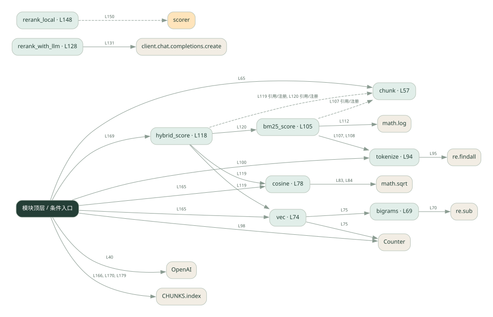

3-5 · 全课程第 45 节
切块、混合检索与重排
042.py
源码快照 a5f27d686383 · 静态解析 · 2026-09-10
01 / 要完成的事
把文档切块，用字符向量与词项分数召回，再对候选排序。
02 / 为什么要做
整篇检索粒度粗；只用一种匹配信号可能漏掉相关片段。
03 / 当前代码状态
vec 使用字符二元组计数，不能理解深层语义。rerank_with_llm 会真实调用模型，rerank_local 是本地降级分支；仍有切块、打分等填空。
仍有下划线占位表达式，源文件行号：60, 90, 124, 178。相应路径在补完前不能正常执行。
存在外部服务或模型依赖；执行前需按源文件配置依赖和凭据，可能联网或产生 API 费用。 本次只做静态解析，没有运行练习，也没有替你填写或修改原代码。
04 / 调用图
打开大图 ↗实线：源码中的直接调用；虚线：函数引用/注册、动态调用或按方法名推断的候选。L 是调用所在源码行号。箭头不表示执行顺序或每次必经；分支、循环、异步调度及框架内部调用需结合源码。灰色是外部/未解析目标，橙色是动态分发；省略 print、len 和常规容器操作以减少干扰。孤立函数可能尚未接入。

先从 模块入口 出发，沿箭头找到本文件函数，再查看外部调用或动态分发。右侧调用清单保留所有静态调用点，能回到原文件逐行对照。
05 / 函数定位
| 函数 / 定义行 | 职责（源码注释） | 内部调用 |
|---|---|---|
chunkL57 | 以源码函数体为准；下列调用展示其依赖。 | range, len, chunks.append |
bigramsL69 | 以源码函数体为准；下列调用展示其依赖。 | re.sub, range, len |
vecL74 | 以源码函数体为准；下列调用展示其依赖。 | Counter, bigrams |
cosineL78 | 以源码函数体为准；下列调用展示其依赖。 | set, sum, math.sqrt, a.values, b.values |
tokenizeL94 | 以源码函数体为准；下列调用展示其依赖。 | re.findall |
bm25_scoreL105 | 以源码函数体为准；下列调用展示其依赖。 | tokenize, cterms.count, math.log |
hybrid_scoreL118 | 以源码函数体为准；下列调用展示其依赖。 | cosine, vec, bm25_score |
rerank_with_llmL128 | 以源码函数体为准；下列调用展示其依赖。 | client.chat.completions.create, float, resp.choices[动态键].message.content.strip, ranked.append, ranked.sort |
rerank_localL148 | 本地精排：直接用混合分重排（不调 LLM 的降级版） | scorer, scored.sort |
这样做的优点
可比较切块、重叠和混合权重对候选的影响。
代价与局限
本地字符二元组不是预训练语义 embedding，稀疏分数也是简化实现；两种分数尺度未必可直接相加。
适用场景
理解 RAG 各环节和做小数据实验。
不宜直接照搬
把演示效果等同真实语义检索或生产 BM25 性能。
动手检验理解
问一个与原文同义但措辞不同的问题，观察字符匹配的局限。
有未实现位置时先预测，再补齐验证。能启动不等于逻辑正确。
查看全部 63 个静态调用 / 引用点
| 调用方 | 目标 | 源码行 | 类型 |
|---|---|---|---|
| <模块入口> | OpenAI | 40 | 调用 |
| chunk | range | 60 | 调用 |
| chunk | len | 60 | 调用 |
| chunk | chunks.append | 61 | 调用 |
| <模块入口> | chunk | 65 | 调用 |
| bigrams | re.sub | 70 | 调用 |
| bigrams | range | 71 | 调用 |
| bigrams | len | 71 | 调用 |
| vec | Counter | 75 | 调用 |
| vec | bigrams | 75 | 调用 |
| cosine | set | 81 | 调用 |
| cosine | set | 81 | 调用 |
| cosine | sum | 82 | 调用 |
| cosine | math.sqrt | 83 | 调用 |
| cosine | sum | 83 | 调用 |
| cosine | a.values | 83 | 调用 |
| cosine | math.sqrt | 84 | 调用 |
| cosine | sum | 84 | 调用 |
| cosine | b.values | 84 | 调用 |
| tokenize | re.findall | 95 | 调用 |
| <模块入口> | Counter | 98 | 调用 |
| <模块入口> | set | 100 | 调用 |
| <模块入口> | tokenize | 100 | 调用 |
| <模块入口> | len | 102 | 调用 |
| bm25_score | tokenize | 107 | 调用 |
| bm25_score | tokenize | 108 | 调用 |
| bm25_score | cterms.count | 111 | 调用 |
| bm25_score | math.log | 112 | 调用 |
| hybrid_score | cosine | 119 | 调用 |
| hybrid_score | vec | 119 | 调用 |
| hybrid_score | vec | 119 | 调用 |
| hybrid_score | bm25_score | 120 | 调用 |
| rerank_with_llm | client.chat.completions.create | 131 | 调用 |
| rerank_with_llm | float | 140 | 调用 |
| rerank_with_llm | resp.choices[动态键].message.content.strip | 140 | 调用 |
| rerank_with_llm | ranked.append | 143 | 调用 |
| rerank_with_llm | ranked.sort | 144 | 调用 |
| rerank_local | scorer | 150 | 调用 |
| rerank_local | scored.sort | 151 | 调用 |
| <模块入口> | print | 157 | 调用 |
| <模块入口> | print | 158 | 调用 |
| <模块入口> | print | 159 | 调用 |
| <模块入口> | print | 160 | 调用 |
| <模块入口> | len | 160 | 调用 |
| <模块入口> | enumerate | 161 | 调用 |
| <模块入口> | print | 162 | 调用 |
| <模块入口> | sorted | 165 | 调用 |
| <模块入口> | cosine | 165 | 调用 |
| <模块入口> | vec | 165 | 调用 |
| <模块入口> | vec | 165 | 调用 |
| <模块入口> | print | 166 | 调用 |
| <模块入口> | CHUNKS.index | 166 | 调用 |
| <模块入口> | sorted | 169 | 调用 |
| <模块入口> | hybrid_score | 169 | 调用 |
| <模块入口> | print | 170 | 调用 |
| <模块入口> | CHUNKS.index | 170 | 调用 |
| <模块入口> | print | 179 | 调用 |
| <模块入口> | CHUNKS.index | 179 | 调用 |
| <模块入口> | print | 181 | 调用 |
| <模块入口> | print | 182 | 调用 |
| bm25_score | chunk | 107 | 引用/注册 |
| hybrid_score | chunk | 119 | 引用/注册 |
| hybrid_score | chunk | 120 | 引用/注册 |